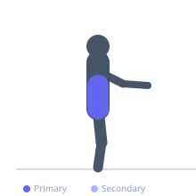

Exercise guide / Russian Twist
Russian Twist
The Russian twist is a rotational core exercise performed in a seated position with the torso leaned back at an angle. The lifter rotates the torso side to side, training the obliques and transverse abdominis in a rotational pattern. It can be performed with bodyweight, a weight plate, or a medicine ball.
Primary muscles
external oblique
internal oblique
Secondary muscles
rectus abdominis
transverse abdominis
Equipment
No Equipment (Bodyweight)
Optional
Medicine Ball


Starting position
- Sit on the floor with knees bent and feet flat or slightly elevated. Lean back until the torso is at approximately 45 degrees from the floor. Hold a weight or clasp hands together in front of the chest.
Setup
- Feet can be anchored for beginners. Advanced lifters can elevate the feet for greater difficulty.
Steps
- Rotate the torso to one side, bringing the hands or weight toward the floor beside the hip.
- Rotate back through center and to the other side.
- One rotation to each side counts as one complete repetition.
Coaching cues
- Let your ribs lead the rotation — not your arms
- Keep the chest up and spine long throughout
Breathing
- Exhale on each rotation. Breathe rhythmically.
Range of motion
- Rotate as far as the torso allows without losing the leaned-back position.
Tempo
- Controlled — 1-2 seconds per rotation
Common mistakes
- Rotating with the arms only — the rotation must come from the torso
- Relaxing the core during the movement
Safety
- If lower back discomfort occurs, reduce the torso lean angle
Training
- hypertrophy: 15–25 reps
- hypertrophy: 3–4 sets
- Rest: {'hypertrophy': 60}